| x | y | |||||||||||||||
|---|---|---|---|---|---|---|---|---|---|---|---|---|---|---|---|---|
| count | mean | std | min | 25% | 50% | 75% | max | count | mean | std | min | 25% | 50% | 75% | max | |
| dataset | ||||||||||||||||
| 1 | 11.0 | 9.0 | 3.316625 | 4.0 | 6.5 | 9.0 | 11.5 | 14.0 | 11.0 | 7.500909 | 2.031568 | 4.26 | 6.315 | 7.58 | 8.57 | 10.84 |
| 2 | 11.0 | 9.0 | 3.316625 | 4.0 | 6.5 | 9.0 | 11.5 | 14.0 | 11.0 | 7.500909 | 2.031657 | 3.10 | 6.695 | 8.14 | 8.95 | 9.26 |
| 3 | 11.0 | 9.0 | 3.316625 | 4.0 | 6.5 | 9.0 | 11.5 | 14.0 | 11.0 | 7.500000 | 2.030424 | 5.39 | 6.250 | 7.11 | 7.98 | 12.74 |
| 4 | 11.0 | 9.0 | 3.316625 | 8.0 | 8.0 | 8.0 | 8.0 | 19.0 | 11.0 | 7.500909 | 2.030579 | 5.25 | 6.170 | 7.04 | 8.19 | 12.50 |
Exploratory Data Analysis #2
Bea Taylor - beatrice.taylor@ucl.ac.uk
13th October 2026
Last week
Exploratory data analysis, part 1
- Our dataset — DfE school performance in England, 2022/23
- Data types
- Descriptive statistics: distributions, histograms, boxplots
- Descriptive statistics: mean, median, variance, standard deviation
- Making things comparable: counts, rates and standard scores
- Missing data and outliers
This week
Last week was largely descriptive, this week we go a bit deeper!
- Last week we talked about histogram’s, this week we’ll look at probability distributions. These are functions with parameters, that you can compute and predict with.
- We’ll look at how data can be processed to make it easier to analyse.
- Last week you considered what the population of interest was, this week we will consider different sources of data bias.
Learning objectives
By the end of this lecture you should be able to:
- Describe the characteristic features of common probability distributions
- Apply exponentials and logarithms to transform data
- Evaluate whether a dataset is representative
When descriptive statistics aren’t enough
Same same but different
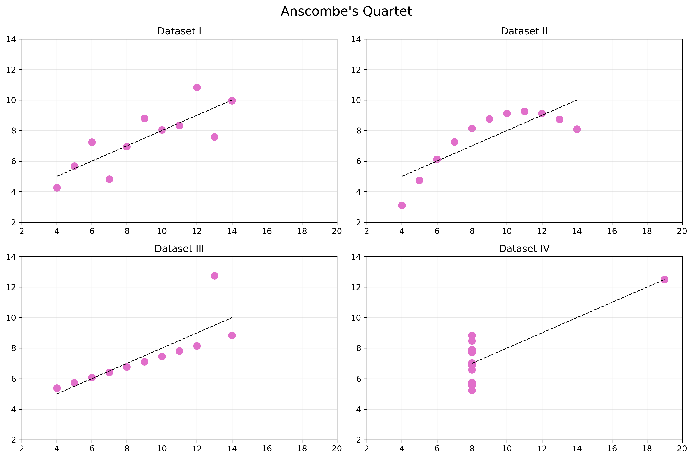
Probability distributions
A mathematical function that describes the likelihood of different events occuring in a random process.
More sophisticated than descriptive statistics, probability distributions allow us to mathematically approximate the processes which generated the data.
Continuous vs. Discrete
How we measure data is important for how we model and analyse it.
Continuous
Measurable data which can take any value within a given range.
Discrete
Measurable data which can take seperate, countable values.
Quiz
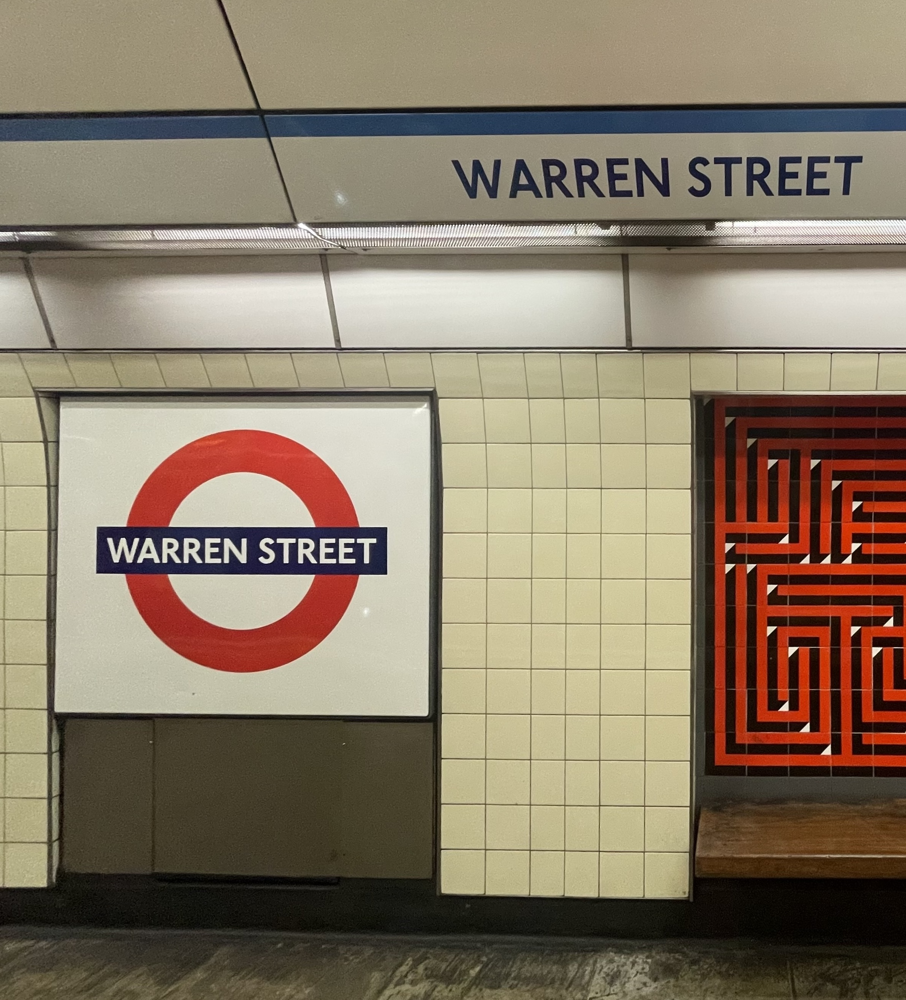
Is this data continuous or discrete?
- The air temperature on the platform at Warren Street
- The number of tubes arriving at the platform in the next 10 minutes
- The distance commuters travel to work
- How late a train is, as recorded in the TfL delay log (whole minutes)
The probability function
\[\begin{align} p(x) \end{align}\]Having a function for the distribution allows us to evaluate the probability of events, and hence (spoiler alert for lecture 3) evaluate hypotheses.
- continuous distributions -> probability density functions (PDFs)
- discrete distributions -> probability mass functions (PMFs)
Key distributions
| Normal | Binomial | Poisson | Exponential | |
|---|---|---|---|---|
| Type | Continuous | Discrete | Discrete | Continuous |
| Shape | Symmetric, one peak | Depends on \(p\); symmetric if \(p=0.5\) | Right-skewed (more symmetric as \(\lambda\) grows) | Right-skewed, highest at zero |
| Parameters | \(\mu\), \(\sigma\) | \(n\), \(p\) | \(\lambda\) | \(\lambda\) |
| Probability function | PMF | PMF |
Normal distribution
The most fundamental distribution
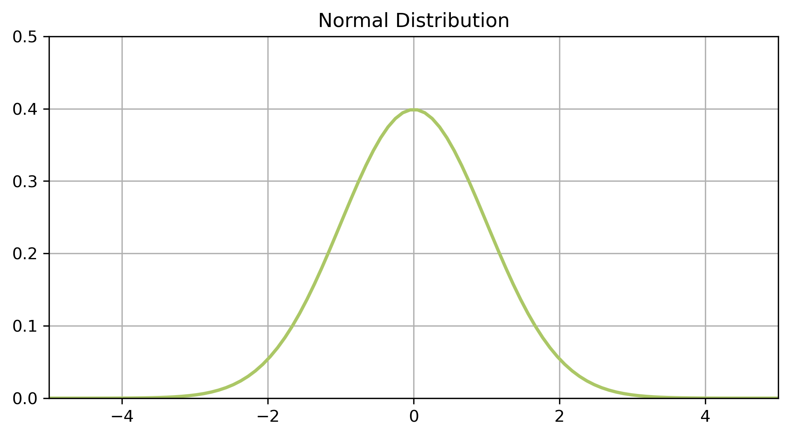
Key features
- Data is continuous
- it is something you measure not something you count
- It is symmetric
- data is equally likely to be larger or smaller than average
- It has a characteristic size
- there is a single peak, with all data points close to the mean
- There are smooth tails
- there is less data further away from the mean
See it in histograms
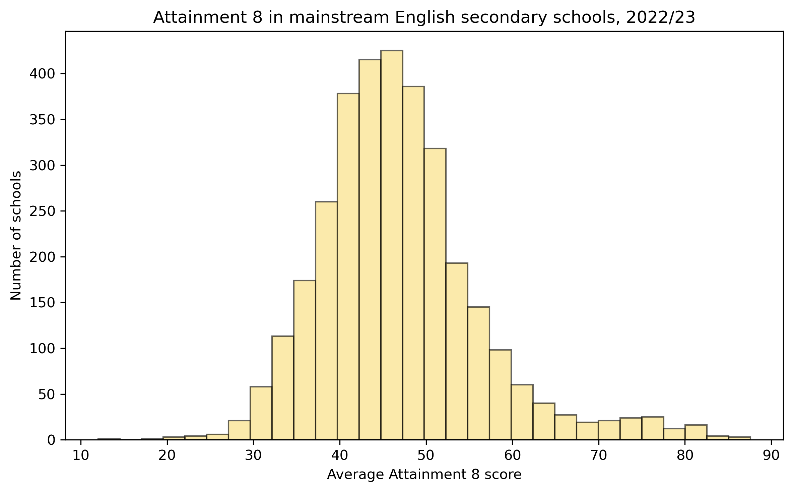
Approximately normal
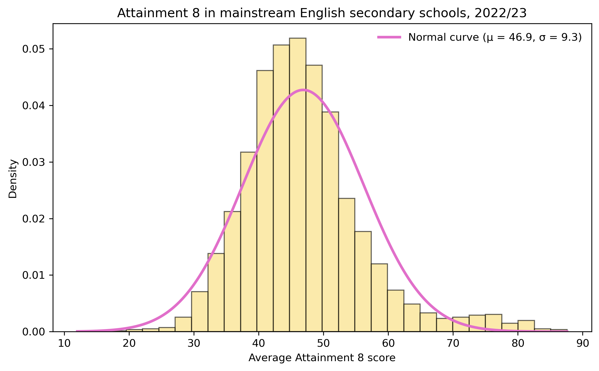
Uniquely described by two variables…
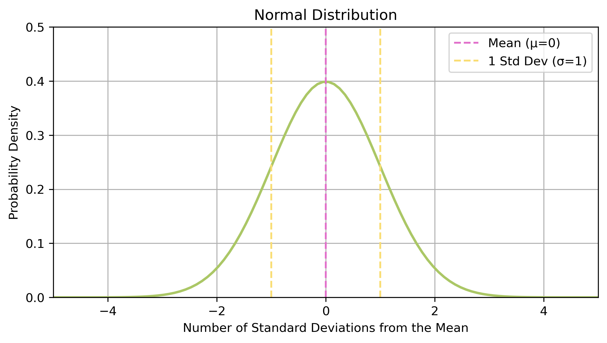
…and a probability density function
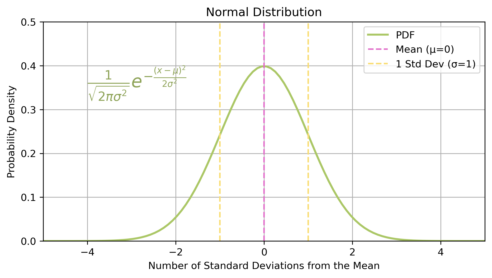
The probability density function (PDF) describes the likelihood of different outcomes for a continuous random variable
Random variable
A random variable is a way to map the outcome of a random process to a probability.
In mathematical notation, a random variable \(X\) is approximately normally distributed about a mean of \(\mu\) with a standard deviation of \(\sigma\):
\[\begin{align} X \sim N(\mu,\sigma) \end{align}\]Sampling distributions
The distribution of a statistic (e.g. the sample mean) across all the samples of size \(n\) we could have drawn.
The standard deviation of the sampling distribution of the mean (the standard error) is:
\[\begin{align} \frac{\sigma}{\sqrt{n}} \end{align}\]As \(n\) increases, the sampling distribution gets less spread out — more certainty about the mean.
Central limit theorem
As the sample size \(n\) grows, the sampling distribution of the mean tends towards normal — whatever the shape of the original data.Calculating probabilities
Can use the PDF to evaluate the probability at a specific point.
\[\begin{align} X \sim N(0,1) \end{align}\]
\[\begin{align}
p(x) = \frac{1}{\sqrt{2 \pi \sigma^2}} e^{-\frac{(x-\mu)^2}{2\sigma^2}}
\end{align}\]
Binomial distribution
Coin toss
- I flip a coin 10 times
- How often can I expect to get at least 7 heads?
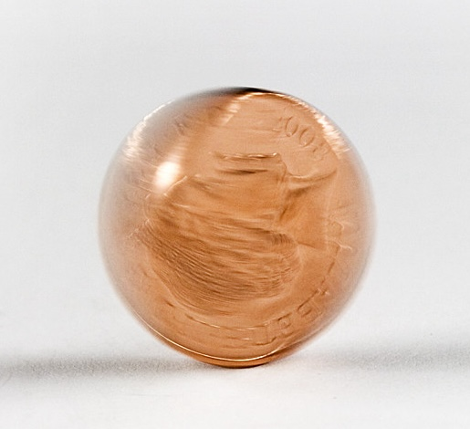
Probability mass function
\[\begin{align} P(X = k) = \binom{n}{k} p^k (1-p)^{n-k} \end{align}\]Where \(n\) is the number of trials, and \(p\) is the probability of success for each trial.
The probability mass function (PMF) describes the likelihood of different outcomes for a discrete random variable
Plotting the distribution
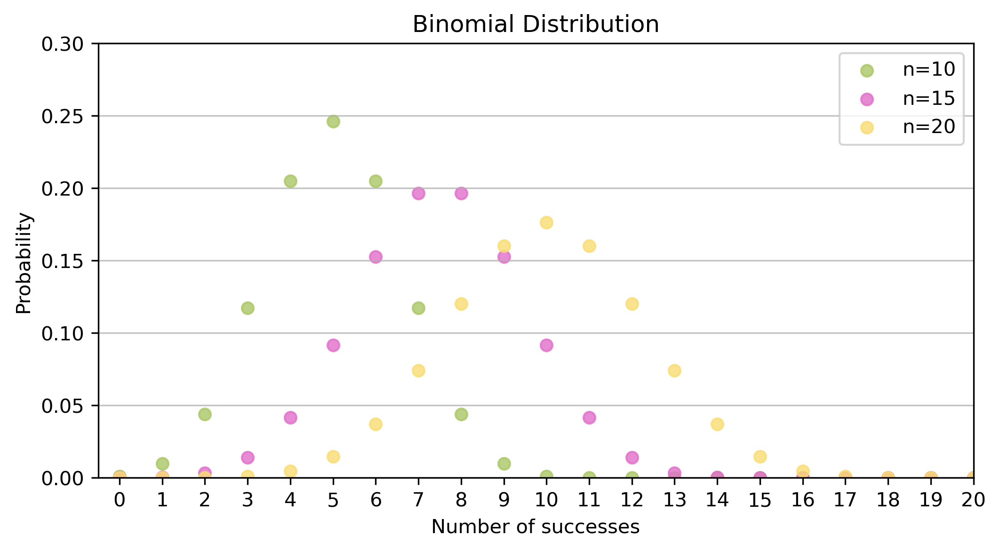
Example 1: a council survey
- Southwark council asks 200 randomly chosen residents whether they support a new cycle lane by Waterloo station.
- Suppose we know that residents are really split 60/40 in favour of the new cycle lane.
- \(n=200\), \(p=0.6\)
- How likely is it that 120 or more say yes, just by chance?
- \(k \geq 120\)
Poisson distribution
Death by horse kicks
- It’s 1894.
- You’re the statistician Ladislaus Bortkiewicz.
- And you’re wondering,
- How many soldiers in the Prussian army have been killed by horse kicks?
Hussars trying not to get trampled by horses. Image credit: https://en.wikipedia.org/wiki/Prussian_ArmyMeasuring rare events
- Imagine a situation where certain rare events can occur in an independent fashion.
- The Poisson distribution estimates how many such events are expected within a time interval
- Fixed time interval (e.g. one minute)
- Fixed rate of events (\(\lambda\))
- Poisson distribution gives the probability of \(k\) events.
Probability mass function
\[\begin{align} P(X = k) = \frac{\lambda^k e^{- \lambda}}{k!} \end{align}\]Where \(\lambda\) is the expected number of events in a given interval.
Plotting the distribution
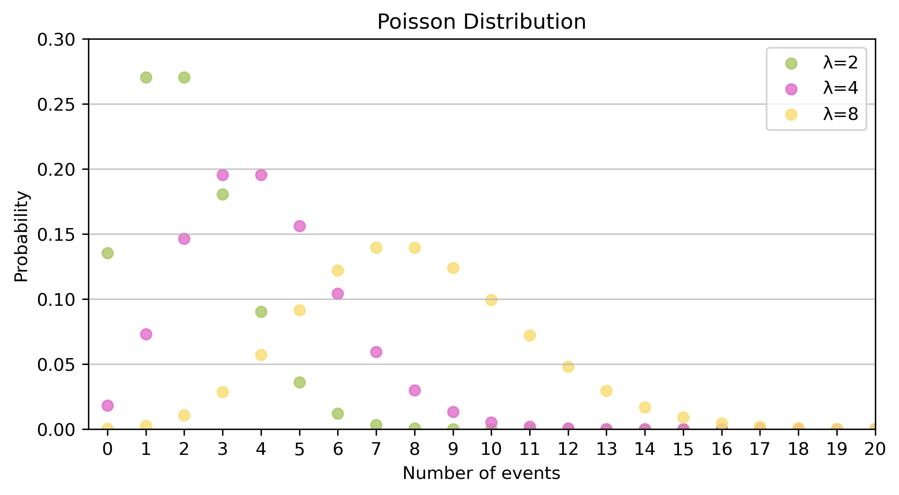
Example 1: bike-share arrivals
- A docking station receives on average 0.5 Lime bikes per minute
- How likely is it that no bikes arrive in the next 10 minutes?
- How likely is it that 8 or more bikes arrive?
from scipy.stats import poisson
lambda_10min = 0.5 * 10 # expected arrivals in 10 minutes
p_no_arrivals = poisson.pmf(0, mu=lambda_10min)
p_8_or_more_arrivals = poisson.sf(7, mu=lambda_10min)
print("Probability of no arrivals: {}".format(round(p_no_arrivals, 4)))
print("Probability of 8 or more arrivals: {}".format(round(p_8_or_more_arrivals, 4)))Probability of no arrivals: 0.0067
Probability of 8 or more arrivals: 0.1334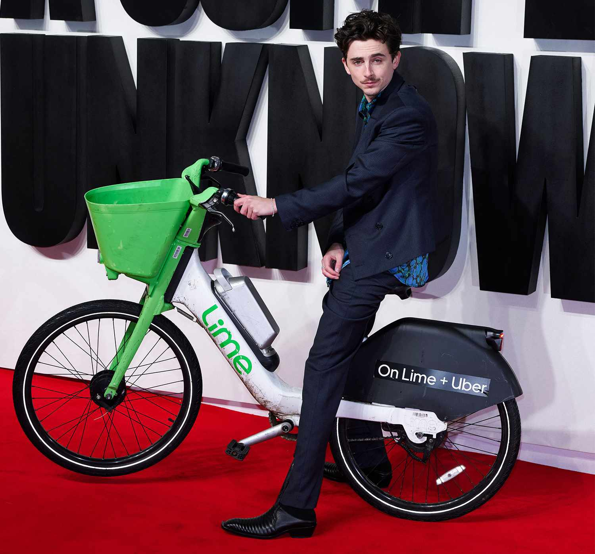
Timmy C found a bike in time.Example 2: trees in a forest
- London Plane trees are randomly distirbuted in London’s parks, with an average of 2 trees per 100m².
- What is the probability of finding exactly 3 trees in a 100m² area of Hyde Park?
A London Plane tree in Wandsworth Park.Exponentials and Logarithms
Exponentials
If the Poisson measures the probability of \(x\) events within a time period, then the exponential measures how long we are likely to wait between events.
So what is the exponential function?
“The greatest shortcoming of the human race is our inability to understand the exponential function” – Albert Bartlett (physicist)
A game of chess…
- A scholar has invented chess
- The emperor is really grateful and asks the scholar to choose a gift in recompense
- The scholar asks for grains of rice
- Specifically, rice to fill the chessboard, such that the number of grains double on each square
Krishna and Radha playing chaturanga - the precursor to chess. Image credit: https://en.wikipedia.org/wiki/Chaturanga…and rice
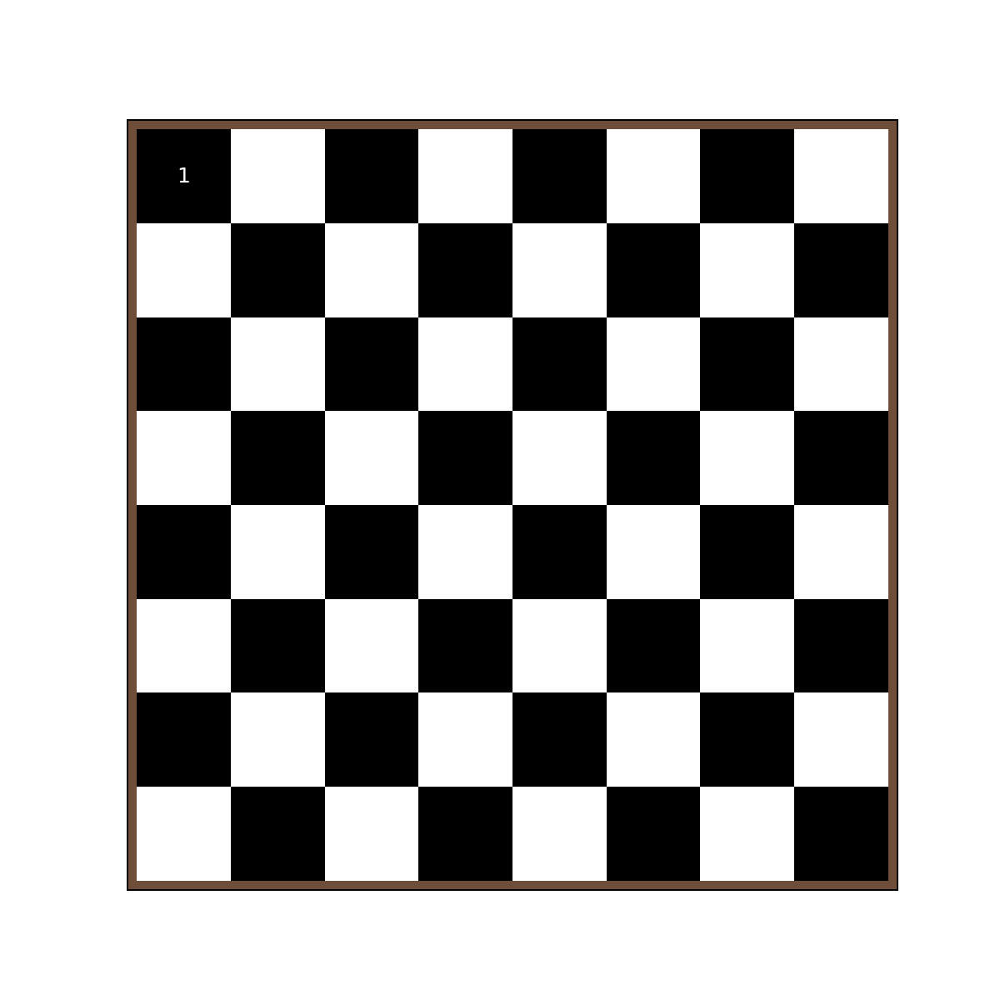
What does this look like on a graph?
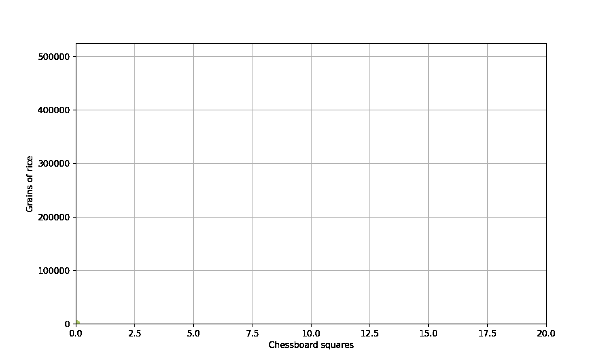
Generally we have
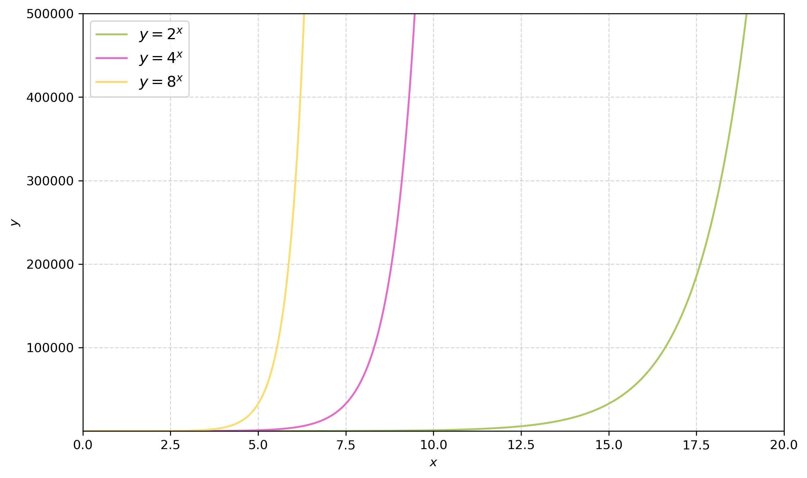
The exponential function
The (natural) exponential function is:
\[\begin{align} y=e^x \end{align}\]- \(e \approx 2.718...\) is eulers number - a mathematical constant.
The exponential distribution
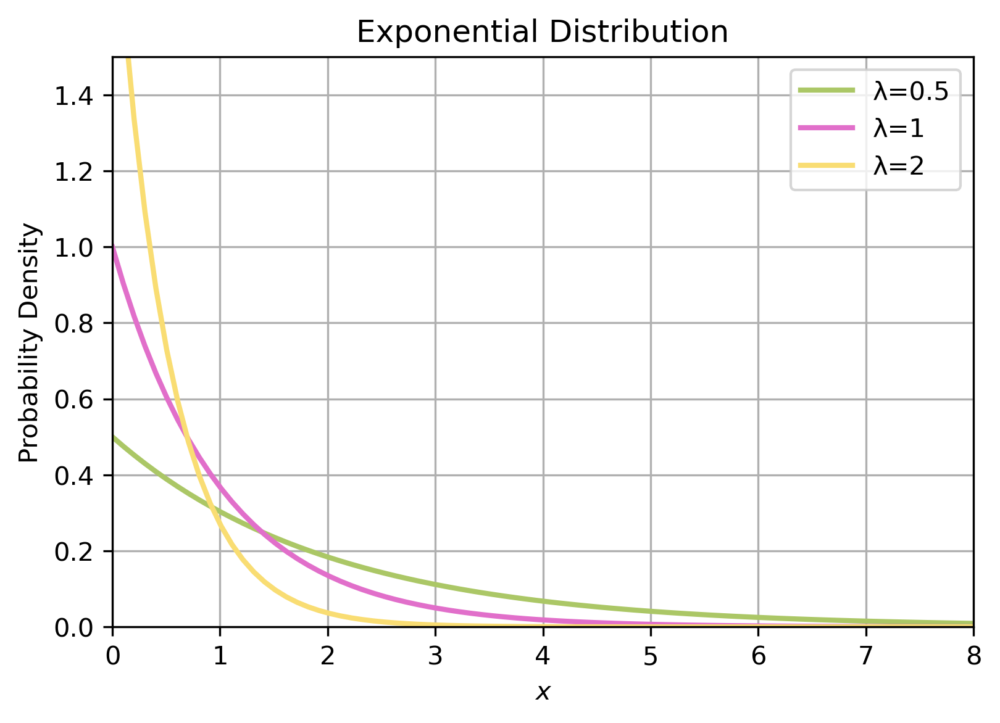
Probability density function
The PDF of the exponential distribution is:
\[\begin{align} P(x) = \lambda e^{-\lambda x} \end{align}\]where \(\lambda\) is the rate parameter.
As in the poisson distribution \(\lambda\) is the fixed rates of events for a predetermined time interval.
Note
This is sometimes referred to as the negative exponential distribution - as it is a negative exponent.Traditionally used to model time between rare events.
- time between volcanic eruptions
- time between customers entering a shop
- time of radioactive decay
Example 1: wait time for a bike-share arrival
- One Lime bike arrives at the docking station every minute.
- What is the probability that it will be ten minutes until the next bike arrives?
- \(\lambda=1\)
- \(p(10) = 1 \times e^{-1 \times 10}\)
Timmy C found a bike in time.Example 2: wait time for a bike-share arrival
- One Lime bike arrives at the docking station every minute.
- What is the time at which the probability of a bike arrival is 0.5?
- \(\lambda=1\)
- \(0.5 = p(x) = 1 \times e^{-1 \times x}\)
- what is \(x\)?
This is easier said than done – the best way is to invert the equation.
Inverse operations
The mathematical operation that reverses.
Subtract is the inverse of adding.
\[\begin{align} 2 + x=5 \implies 5-2=x \end{align}\]Divide is the inverse of multiplying.
\[\begin{align} 2 \times x =6 \implies 6 \div 2=x \end{align}\]Logarithms
Taking the logarithm is the inverse of taking the exponential.
\[\begin{align}
2^3 = 8 \implies \log_2(8) =3
\end{align}\]
More generally:
\[\begin{align} a^x = b \implies \log_a(b) =x \end{align}\]For the natural logarithm:
\[\begin{align} e^x = b \implies \log_e(b) =ln(b) = x \end{align}\]Natural logarithm
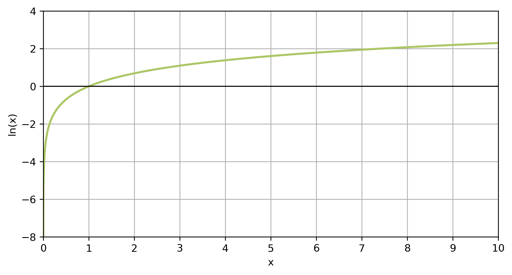
Probability distributions
| Normal | Binomial | Poisson | Exponential | |
|---|---|---|---|---|
| Type | Continuous | Discrete | Discrete | Continuous |
| Shape | Symmetric, one peak | Depends on \(p\); symmetric if \(p=0.5\) | Right-skewed (more symmetric as \(\lambda\) grows) | Right-skewed, highest at zero |
| Parameters | \(\mu\), \(\sigma\) | \(n\), \(p\) | \(\lambda\) | \(\lambda\) |
| Probability function | PMF | PMF |
Transforming data
Why transform?
Because logarithms undo exponentials, they give us two very useful tools for data:
- Straighten exponential growth
- Tame long right tails
The most important rules:
\[\begin{align} log_a(a^x) = x \\ ln(e^x) = x \end{align}\]Log it! to straighten growth
As the logarithm inverses the exponential, taking the logarithm of an exponential function will result in a linear relationship.
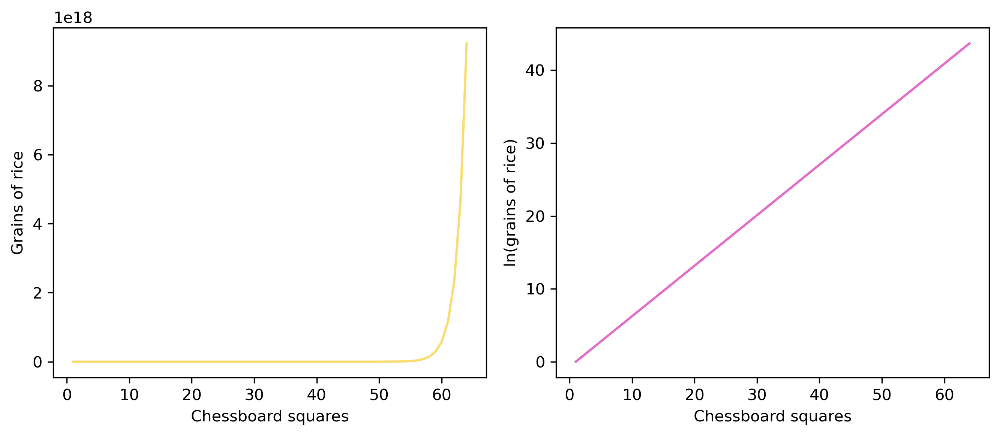
Log it! to tame long tails
Long right tail, no typical size: most schools cluster at low absence, but a few sit far out — after the log it looks much closer to normal.
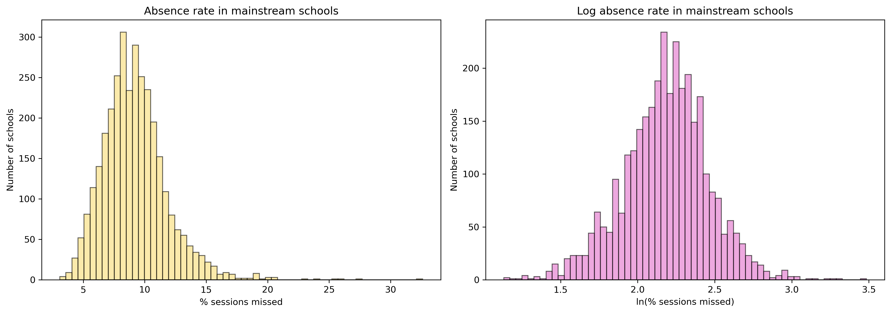
Representative data
Before we try to describe the data, it’s important to know where the data came from.
The dream vs reality
Ideally, we would like all the relevant data.
… in reality we normally only have some.
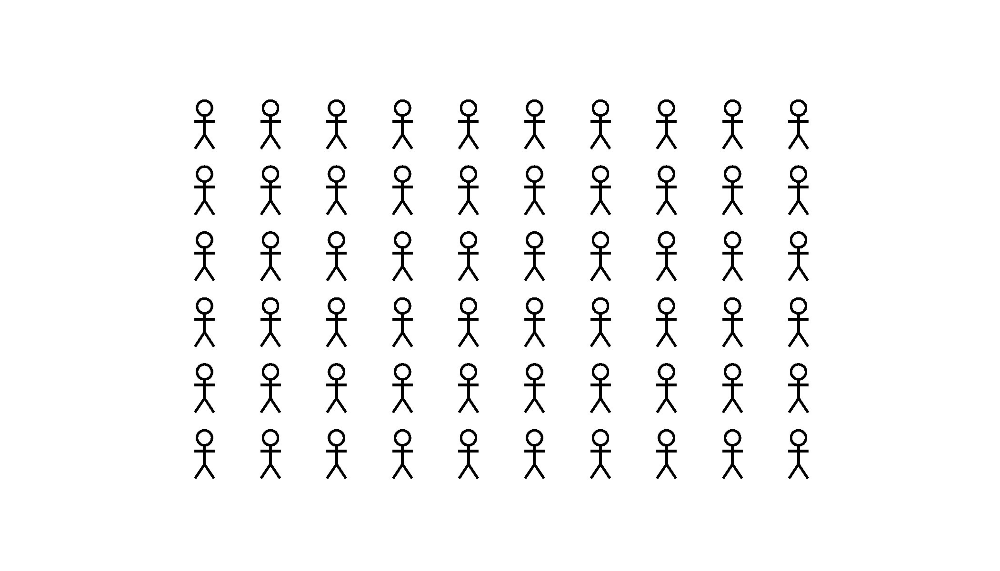
Approximating
Hence, we sample a subset of the data. We need to choose our sample carefully - we want what happens in the sample to approximate what happens in the whole population.
In practise we might try different sampling approaches such as:
- random sampling
- systematic sampling
Bias
It’s important to understand if your dataset is unrepresentative or biased.
Where does bias creep in?
Three places, three questions:
- In the sample: selection bias. Who ended up in the data, and who didn’t?
- In the world: historical bias. What existing inequalities does the data reflect?
- In the analyst: cognitive bias. What did we choose to collect, keep and report?
Particularly important for large datasets and AI models, where patterns that aren’t obvious to us can reflect these biases.
Selection bias
When the sample chosen doesn’t represent the whole population of interest
Examples:
- Self selection Roy Model
- Underlying characteristics of people who self select into certain groups.
- WEIRD people
- Commonly sampled in behavioural sciences.
- Reflects a very small proportion of global population.
- 2001 Westminster census - reflected less people than expected, as high numbers of second homes
Historical bias
Reflects existing, real world, inequalities
Examples:
- Police profiling
- Automated tools to detect ‘criminals’.
- Trained on datasets which reflect current racist practises.
Cognitive bias
Systematic patterns in how we think about, and perceive, the world.
Our cognitive biases can impact:
- data collection
- data selection
- data processing
- modelling choices
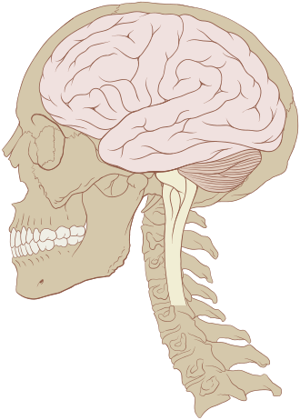
Why is this important?
If we’re not careful we can propagate bias to the research, and hence results.
This can lead to incorrect conclusions.
Can data ever be truly representative?
Probably not.
Failing that… .. we can acknowledge our biases!

Image credit: [xkcd](https://xkcd.com/2494/)Overview
We’ve covered:
- Normal distribution
- Binomial distribution
- Poisson distribution
- Exponentials
- Logarithms
- Representative data
The practical will focus on exploratory data analysis for a variety of different datasets. Have questions prepared!
© CASA | ucl.ac.uk/bartlett/casa